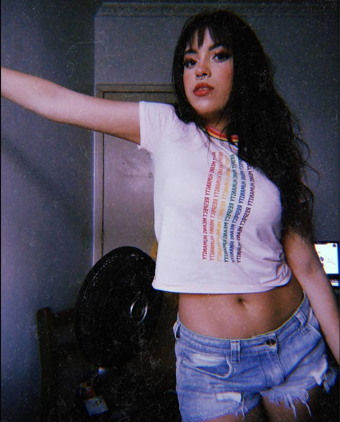

O planeta Saturno é um deus romano, que na mitologia grega equivale a Cronos, o filho do Céu (Urano) e da Terra (Gaia). Ele representa o tempo e sua passagem muitas vezes cruel. Cronos toma o lugar de seu pai, que é tomado pela confusão, mas logo depois tem conhecimento de uma profecia que dizia que o mesmo aconteceria consigo. Com medo do destino, após casar com Reia (uma titânide também filha de Urano e Gaia), começa a devorar seus filhos para evitar ser deposto. Esse fato é muito curioso, à medida que faz um parelho com o próprio tempo, que tudo consome sem piedade ou delongas para cumprir sua própria função.
Porém, um dia a profecia se cumpre e Zeus (que até então estava escondido pela mãe) lhe dá uma poção para que vomite todos os filhos previamente engolidos. Uma grande luta se desenrola, e Zeus finalmente toma o seu posto. Há algumas versões que apontam que ele foi tornado prisioneiro por um tempo, depois reaparecendo e estabelecendo um período de paz e de ensino aos homens sobre a Agricultura. É bonito pensar que na nossa vida ocorre o mesmo: a princípio somos inconsequentes e impulsivos, enquanto com o passar dos anos nos tornamos mais sábios, experientes e pacientes. Assim sendo, somos realmente como o plantio, que ao longo do tempo evolui e dá frutos produtivos.
Pois bem, creio que tenho uma surpresinha para você, chega de falar de Deuses, vamos falar da mais antiga Deusa Saturn, ela não é conhecida mundialmente, então deixarei umas fotos ilustrando sua aparência maravilhosa...
Para ver as imagens citada no parágrafo acima, passe o mouse por cima de cada icone e clique, mostraremos 3 versões dessa Deusa maravilhosa.. E cuidado para não se apaixonar.
Deusa Saturn
- Deusa 1°
- Deusa 2°
- Deusa 3° 